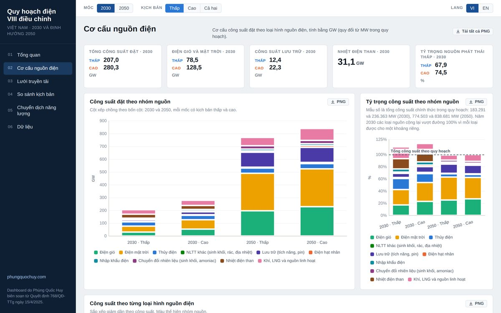
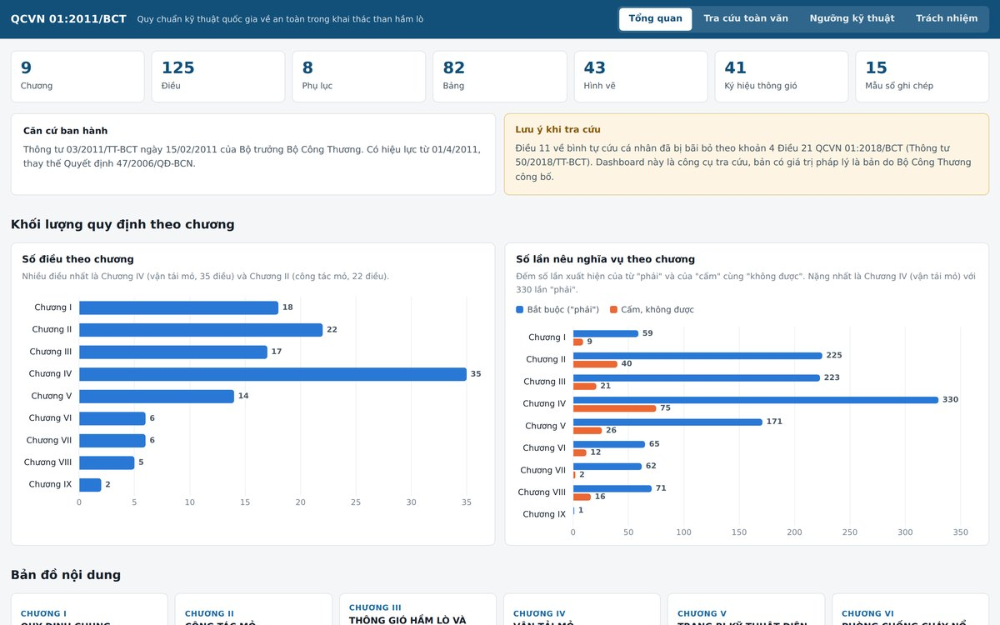
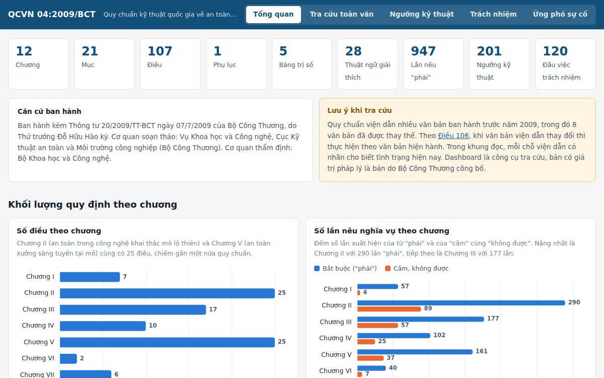
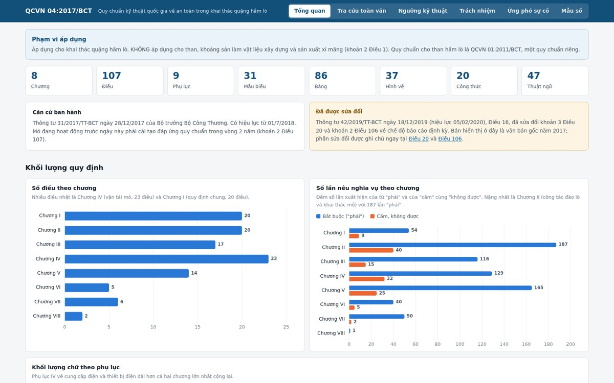
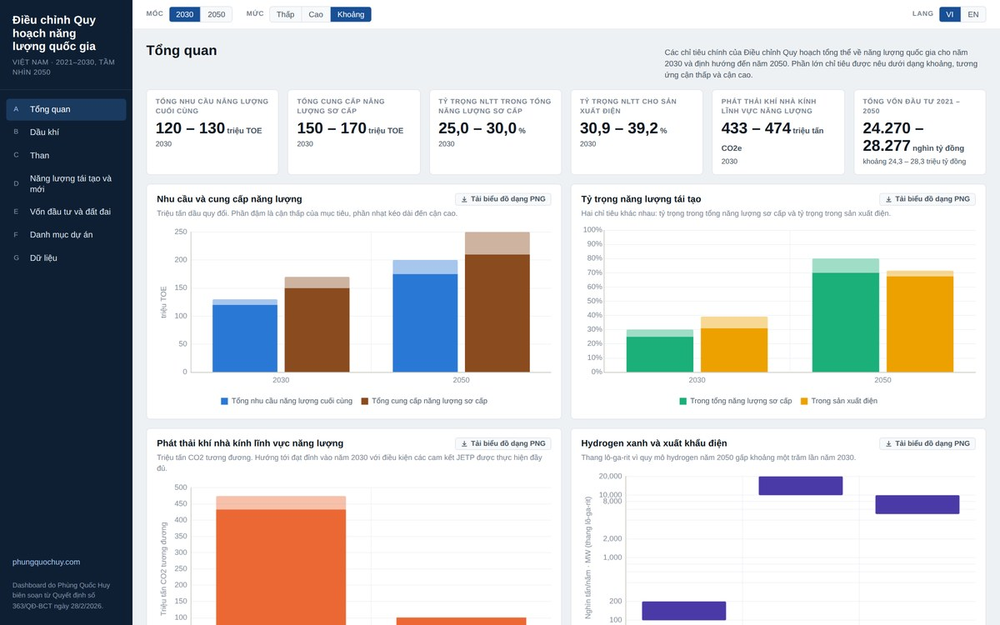

Dự báo năng lượng
Energy Outlook
Chính sách năng lượng
Energy policy
Quy hoạch điện VIII điều chỉnh
Phụ tải, cơ cấu 16 loại hình nguồn điện, khối lượng lưới truyền tải theo ba giai đoạn, vốn đầu tư và lộ trình chuyển dịch năng lượng, đối chiếu kịch bản phụ tải thấp và cao. Kèm phần ghi chú những chỗ số liệu trong quy hoạch chưa khớp.

An toàn khai thác than hầm lò
Toàn văn 125 điều và 8 phụ lục có tìm kiếm không dấu và dẫn chiếu chéo bấm được, 125 ngưỡng kỹ thuật an toàn kèm công cụ kiểm tra nhanh giá trị đo được tại hiện trường, 79 đầu việc kiểm tra định kỳ chia theo chức danh và tần suất. Giữ đủ 43 hình vẽ và 41 ký hiệu thông gió mỏ của bản in.

An toàn khai thác mỏ lộ thiên
Toàn văn 107 điều và phụ lục có tìm kiếm không dấu và dẫn chiếu chéo bấm được, 201 ngưỡng kỹ thuật an toàn kèm công cụ kiểm tra nhanh và công cụ tính kích thước an toàn theo thông số máy xúc, ô tô, súng bắn nước, 120 đầu việc theo chức danh, tần suất và mùa mưa bão, quy trình ứng phó sự cố cùng mẫu danh sách báo tin in được.

An toàn khai thác quặng hầm lò
Toàn văn 107 điều và 9 phụ lục có tìm kiếm không dấu và dẫn chiếu chéo bấm được, 205 ngưỡng kỹ thuật an toàn kèm 11 ô kiểm tra nhanh giá trị đo tại hiện trường, 87 đầu việc kiểm tra định kỳ chia theo chức danh và tần suất, trình tự ứng phó sự cố theo 16 vai trò, và đủ 31 mẫu sổ in được hoặc tải về dạng Excel. Có bảng đối chiếu sang QCVN 01:2011 về than hầm lò.

Điều chỉnh Quy hoạch năng lượng quốc gia
Mục tiêu năng lượng sơ cấp và cuối cùng, phân ngành dầu khí, hạ tầng than, năng lượng tái tạo và năng lượng mới, vốn đầu tư và nhu cầu đất đai, cùng toàn bộ 285 mục định hướng đầu tư của ba phụ lục có bộ lọc và tìm kiếm.
Các dashboard mới về dự báo năng lượng của các nền kinh tế APEC khác, than, khoáng sản chiến lược, quy chuẩn kỹ thuật và công nghệ phát thải thấp sẽ được bổ sung tại đây. Nguồn số liệu ghi trong từng dashboard.